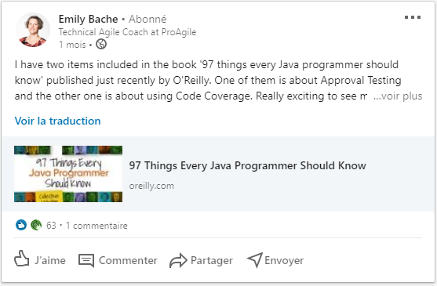

En juillet, sur LinkedIn, je suis tombé sur ce post, d'Emily Bache

Je suis fan du personnage, développeur, et curieux. Je me suis donc attelé à la recherche et à lecture du livre "97 Things Every Java Programmer Should Know"
...
Echec cuisant : Je me suis trompé dans le titre du livre.
...
Mais j'ai trouvé autre chose : le livre "97 Things Every Programmer Should Know" (sans "Java"), datant de 2010, disponible sous GitHub, GitBook, sous une license Creative Commons, et je l'ai lu (en partie). Le livre est chouette, facile à lire, et balaie un large panel de sujet. Il regroupe 97 conseils sur le développement informatique, sur deux pages maximum. Rien n'est profondément creusé, mais certaines anecdotes nous rappellent notre quotidien de développeur, OPS, testeur, ou d'autres métiers du développement logiciel.
Dans la suite de cet article, je vous propose de parcourir ce que j'ai compris des 25 premiers conseils.
#1. Agir avec Prudence¶
Act with Prudence (Thing 01) — SebRose

Whatever you undertake, act with prudence and consider the consequences.
— Anonyme
Parfois, dans le développement logiciel, on nous demande de choisir entre "faites le vite" et "faites le bien". Bien souvent, le "faites-le vite" est accompagné de l'intention "on l'améliorera plus tard". Martin Fowler appelle cette pratique la "dette technique intentionnelle" [1].
La dette technique intentionnelle est un emprunt, que vous contractez sur le budget de votre projet. Vous en recevez des bénéfices à court terme, mais plus vous la conservez longtemps, plus elle sera difficile à rembourser. Parfois, ce sera tout bonnement impossible.
Soyez prudent quand vous en introduisez, et soyez conscient des impacts que cette dette peut avoir sur votre projet. Aussi : remboursez votre dette technique aussi vite que possible. Faire autrement serait imprudent.
#2. Appliquez les principes de la programmation Fonctionnelle¶
Apply Functional Programming Principles (Thing 02) — Edward Garson

Les paradigmes de la programmation fonctionnelle vous permettent d'améliorer grandement la qualité de votre code. Et ce, même dans des languages utilisant d'autres paradigmes comme les langages impératifs, ou les langages orientés objet. En effet, votre design fera preuve d'une meilleure transparence référentielle.
La transparence référentielle, c'est quelque chose que vous souhaitez pour le design de votre code, même si vous le ne savez pas encore. Cela implique que toutes vos fonctions sont pures, c'est-à-dire que, pour les mêmes paramètres d'entrée, elles auront toujours le même comportement. Sans effet de bord.
Aussi ; prenez le temps de vous intéresser à la programmation fonctionnelle pour utiliser ses bénéfices dès que vous vous avez besoin.
#3. Demandez-vous "Que ferait l'utilisateur ?" (Ce que vous n'√™tes pas)¶
Ask "What Would the User Do?" (You Are not the User) (Thing 03) — Giles Colborne
Nous avons tendance à croire que les autres pensent comme nous. Ce n'est pas le cas, et il existe un biais cognitif pour le décrire : l'Effet de faux consensus. Ce biais permet d'expliquer pourquoi les développeurs, qui passent davantage de temps à utiliser l'informatique que leurs utilisateurs, ont du mal à comprendre que ces derniers maîtrisent mal les outils et les patterns de l'informatique.
Pour comprendre comment l'utilisateur fonctionne, le meilleur moyen reste encore l'observation. Observez quelqu'un utiliser l'application que vous développez, et proposez-lui de vraies tâches, avec ses propres mots, et non avec les vôtres. Les utilisateurs arrivent à se débrouiller, et trouvent parfois des chemins tordus pour arriver à leurs fins. Votre temps sera mieux investi à les observer pendant une heure, qu'à passer une journée à essayer de deviner leurs intentions.
#4. Automatisez vos standards de code¶
Automate Your Coding Standard (Thing 04) — Filip van Laenen
Au début d'un projet, tout le mode a meilleures intentions du monde. Les développeurs écrivent les standards de code du projet dans des guides de contribution, auxquels tout le monde adhère.
Mais à un moment, tout bascule. Respecter les standards de code devient une corvée.
Pourquoi met-on en place des standards de code ? Pour garder un format uniforme d'un développeur à l'autre ? Pour éviter certains "anti-patterns" et limiter l'apparition de bugs communs ?
Pour maintenir les standards de code qui vous importent, il existe pléthore d'outils produisant des rapports sur la qualité du code. Seules, ces solutions ne sont pas suffisantes : il faut automatiser et imposer les standards de code lorsque c'est possible.
Quelques exemples :
- Assurez-vous de formater automatiquement votre code, dans le processus de "Build" de l'application.
- Utiliser des analyseurs de code statique, pour détecter les anti-patterns honnis. Et cassez le Build quand vous en trouvez un.
- Apprenez à configurer ces outils pour vous-même
- Si la couverture de code vous importe, allez au-delà de la seule mesure. Automatisez l'analyse des résultats, et cassez le Build lorsque votre indicateur va à l'encontre de vos exigences de qualité.
Automatisez le plus possible, ce qui vous semble important. Et pour ce que vous ne pouvez pas automatiser, conservez des guidelines. Mais gardez à l'esprit que tout le monde ne les respectera pas scrupuleusement.
Enfin, vos standards devraient évoluer dans le temps, en même temps que le projet. Ce qui paraissait pertinent au début du projet, aura peut-être moins de sens quelques mois plus tard.
#5. La beaut√© r√©side dans la simplicit√©¶
Chapter 5. Beauty Is in Simplicity (Thing 05) — Jørn Ølmheim

Qu'est-ce que le beau code ? Cette question est très subjective, car la perception de la beauté réside en chacun.
Cependant, quand nous parlons de "beauté du code", nous recherchons souvent :
- Lisibilité
- Maintenabilité
- Rapidité de développement
- L'insaisissable qualité de la beauté intrinsèque
Pensez au code que vous avez rencontré dans votre vie. Si vous n'en avez jamais lu, faites-le ! Maintenant ! Une fois que c'est fait, rappelez-vous ce qui vous a plu.
Pour ma part, c'est la simplicité. Quelle que soit la complexité globale du système, ses modules devraient être découpés en petites parties simples. Avec des objets simples, possédant une seule responsabilité, eux-mêmes possédants des méthodes correctement nommées.
Bref : à tous les niveaux, le code doit rester simple, avec une seule responsabilité simple et claire, et des relations simples. C'est la seule manière de s'assurer que le système reste maintenable au cours du temps, avec une productivité optimale ; faire du code simple, propre, testable.
La beauté naît et se retrouve dans la simplicité.
#6. Avant de Refactorer¶
Before You Refactor (Thing 06) — Rajith Attapattu

En tant que développeur, vous allez être amené à refactorer du code. Par pitié pour vous-même et pour vos collègue, pensez aux éléments suivants :
- La meilleure approche pour refactorer, est de faire le point sur la codebase existante, et de la confronter avec ses tests. Cela vous permettra de comprendre les forces et les faiblesses du code existant, et éventuellement d'éviter les pièges auxquels ont déjà pensé vos prédécesseurs
- Résistez à l'envie de tout réécrire. Souvent, le code en production fonctionne, et ce, même s'il est moche, non testé, et non optimisé. Quand vous le pouvez, réutilisez ce code.
- Privilégiez des petits changements successifs, plutôt mieux qu'un gros changement radical.
- Après chaque étape de votre refactor, assurez-vous que les tests existants passent. Et évitez de supprimer des tests existants, sans savoir ce qu'ils font.
- Votre ego, et vos préférences personnelles, ne sont pas une raison suffisante pour entamer un refactor.
- Introduire une nouvelle technologie, n'est pas une raison suffisante pour entamer un refactor.
- Rappelez-vous que l'erreur est humaine. Vous n'avez pas la garantie que votre refactor améliorera réellement le code.
#7. M√©fiez-vous du partage¶
Beware the Share (Thing 07) — Udi Dahan

Vous est-il arrivé d'appliquer le principe DRY (Don't Repeat Yourself) ? Et de mutualiser du code dupliqué depuis deux modules dans votre code dans une librairie partagée ? Et d'ajouter cette librairie dans les dépendances de vos modules ? Et de vous rendre compte que vous venez de faire n'importe quoi ?
Pourquoi ? Vous venez de passer à côté d'un élément essentiel du développement informatique.
Le contexte.
Trouver du code dupliqué dans deux modules indépendants, ne signifie pas nécessairement qu'il s'agisse de la même logique métier. Les deux modules peuvent évoluer indépendamment l'un de l'autre, et les règles métiers également. Introduire une librairie pour mutualiser du code, a créé un couplage, complexifiant la maintenance des deux modules, en leur imposant de se synchroniser avec un librairie tierce.
Pourtant l'idée initiale part d'une bonne intention : réduire la duplication, et le nombre de lignes de codes. Prenez garde lorsque vous mutualisez du code, et assurez-vous que le contexte métier est cohérent. Alors seulement, mutualisez.
#8. La r√®gle du Boy Scout¶
The Boy Scout Rule (Thing 08) — Robert C. Martin (Uncle Bob)

Laissez toujours le campement plus propre que lorsque vous y êtes entré.
Quelque soit l'auteur originel du code que vous avez sous les yeux, si vous pensez pouvoir l'améliorer, même un tout petit peu, alors faites-le. Améliorez continuellement la codebase que vous partagez avec vos collègues.
#9. Commence par v√©rifier ton code avant de chercher le fautif ailleurs¶
Check Your Code First before Looking to Blame Others (Thing 09) — Allan Kelly
Nous, développeurs, sommes souvent de mauvaise foi : nous ne voulons pas remettre notre code en question lors d'un bug. Jamais.
Cependant, les bugs du compilateur, ou de la JVM sont très rares. Partez du principe que les outils que vous utilisez sont stables et matures, et qu'ils sont utilisés par une multitude d'autres personnes, à moins que vous n'utilisiez une version 0.1 ou une alpha.
Aussi, quand vous avez un problème dans votre application, investissez votre énergie à rechercher le problème et la solution dans votre code, et pas dans le code les autres.
#10. Choisissez vos outils avec soin¶
Choose Your Tools with Care (Thing 10) — Giovanni Asproni

Aujourd'hui, les logiciels sont rarement construits à partir de rien : ils sont assemblés à partir d'outils existants, de frameworks et de librairies.
Cependant, choisir le bon ensemble d'outils est parfois un casse-tête sans nom. Cherchez la raison d'être de vos outils, et comprenez le problème qui a entrainé leur création. Bien trop souvent, à utiliser des librairies et des frameworks trop complexes, vous chercherez à les tordre, et à ler détourner de leur usage. Vous arriverez probablement à le faire fonctionner, mais dans un contexte auquel il n'est pas destiné.
Par exemple, si vous êtes dans un contexte asynchrone sur l'ensemble de votre système, évitez d'introduire un outil synchrone, même s'il semble répondre à une partie de votre problème.
Ma stratégie dans le choix des outils : ne prenez que les outils dont vous avez réellement besoin. J'essaie également, d'isoler au maximum ces outils de mon domaine métier. Je les intègres dans des couches applicatives dédiées. Ainsi, lorsque j'ai besoin de changer d'outils, je peux le faire facilement.
#11. D√©veloppez dans le Language du Domaine M√©tier¶
Code in the Language of the Domain (Thing 11) — Dan North

Prenons l'exemple de deux codebases.
Dans la première vous trouvez ceci :
if (portfolioIdsByTraderId.get(trader.getId())
.containsKey(portfolio.getId())) {...}
Après moults réflexions, vous vous rendez compte qu'il y a des associations de portfolios et de trader.
Vous les trouvez dans un objet comme celui-ci :
Map<int, Map<int, int>> portfolioIdsByTraderId;
Et, peu à peu, vous vous rendez compte que ce dictionnaire conditionne la visibilité des portfolios par trader.
Dans la seconde code base, vous tombez sur ceci :
if (trader.canView(portfolio)) {...}
Pas de prise de tête. Vous savez ce que le code fait, même si vous ne savez pas comment. Peut-être qu'il s'agit de Map de Map, comme dans l'exemple précédent, mais il s'agit de la logique du trader, pas de la votre.
Répondez franchement : sur quelle codebase préféreriez-vous travailler ?
#12. Le code EST le design¶
Code Is Design (Thing 12) — Ryan Brush
Projetons-nous dans un futur imaginaire, dans lequel des robots sont en mesure de nous construire n'importe quoi, à partir d'air et sans énergie. À une seule condition : Qu'on leur fournisse des plans clairs et précis.
Imaginez la révolution dans le monde de la construction ; si quelque chose cloche sur un bâtiment ou une voiture, il suffit de corriger les plans et de les donner aux robots. Ils reconstruiront l'objet pour un coût négligeable.
Seulement, que se passe-t-il lorsque le desing est imparfait ou incomplet ? Les utilisateurs manipulent des objets imparfaits ou incomplets. Et même si on envoie des robots dédié à réparer les erreurs de design, on arrive à une conclusion : la qualité va de mal en pis, et les utilisateurs sont mécontents.
Et si je vous disais que ce monde existe déjà en informatique ? Que les robots du futur, sont les compilateurs d'aujourd'hui ? Que les plans clairs et précis, correspondent au code que les développeurs produisent ? Le point intéressant de cette approche, c'est de considérer que le produit fini est issu d'un processus de créativité plutôt que d'un processus mécanique.
Cette approche nous donne des pistes pour éviter la catastrophe : - s'assurer de la qualité du produit par des batteries de tests. - gagner en efficacité en cherchant des outils plus précis, et en s'entraînant à les utiliser.
Il n'y a pas de secret : les meilleurs designs sont produits par les meilleurs designers, qui se consacrent à la maîtrise de leur Art.
Le code fonctionne de la même manière.
#13. L'aspect du code compte¶
Code Layout Matters (Thing 13) — Steve Freeman

En tant que développeurs, nous passons plus de temps à naviguer, et à lire du code, qu'à en écrire. Et ce, dans le but de trouver où coder. Il existe plusieurs moyens de faciliter cette lecture :
- Rendre le code facile à scanner visuellement :les gens sont doués pour faire correspondre des motifs visuels entre eux. Si le code est homogène, il sera plus facile de trouver les séparateurs et conteneurs dans le code, et de trouver où coder.
- Rendre la disposition du code expressive :la structure dui code aide à comprendre l'intention, et les formateurs automatiques de code permettent de grouper les structures du code par l'indentation, les sauts de lignes, etc. Mais parfois, ils ne suffisent pas et il faut compléter à la main les sauts de lignes, ou d'autres séparateurs visuels pour bien mettre mon intention en évidence.
- Rendre le code compact : plus j'ai de code sous mes yeux, moins j'en garde en tête. Aujourd'hui, les IDE mettent en évidence le code avec de la coloration syntaxique, et des liens internes. Servez-vous de ces fonctionnalités pour garder un code compact, en évitant le bruit des commentaires, et qui sera plus facile à comprendre.
L'allure générale du code doit m'aider à le comprendre, rien de plus.
#14. La Revue de Code¶
Code Reviews (Thing 14) — Mattias Karlsson

Vous ne le savez pas encore, mais vous avez envie de faire de la revue de code.
Pourquoi ? Elle permet d'améliorer la qualité du code Elle permet de diminuer la fréquence des ratés Elle permet de faire monter en compétence les relecteurs Elle permet de faire monter en compétence le rédacteur Elle permet de faire du TeamBuilding
Comment ? La reveue de code est un moment incroyable pour partager la connaissance d'un projet. Elle contribue à améliorer la propriété collective du code de chacun des membres de l'équipe. En revanche, vous devez chercher à faire des remarques constructives plutôt que caustiques.
Essayer d'organiser une revue de code hebdomadaire : prenez une à deux heures pour lire simple une portion de code de votre projet, en groupe. Rendre cet exercice amusant, est la principale clé de la réussite, et tout le monde en sortira grandi.
#15. Reflexions sur votre code¶
Coding with Reason (Thing 15) — Yechiel Kimchi
Regardez votre code, et réfléchissez. Est-ce qu'il est syntaxiquement correct ? Ou voyez-vous des erreurs ? S'agit-il d'erreurs plutôt techniques ou fonctionnelles ?
C'est tout de même mieux d'utiliser un outil automatisé, tel un compilateur ou des tests automatisés, pour faire cet exercice. N'est-il pas ? Malheureusement, ce n'est pas toujours possible.
Pour faciliter cet exercice : essayez de découper le code en petites portions compréhensibles (par exemple des méthodes de 5 à 10 lignes), et réfléchissez de nouveau pour savoir si chaque petite portion de code est correcte ou non. Cette façon de faire vous rappelle-t-elle quelque chose ?
La plupart des "bonnes pratiques" que l'on connait aujourd'hui, sont issues de d'exercices cherchant à faciliter la lecture, et la reflexion sur le code, hors outillage. Beaucoup de ces pratiques sont, sans surprise, automatisables à l'aide d'analyseurs statiques de code.
Prenez le temps de réfléchir sur votre code. En plus de déterminer de son exactitude, cela vous permet de mieux le comprendre. Et si vous communiquez le résultat de vos réflexions, tout le monde en profitera !
#16. Un Commentaire sur les commentaires¶
A Comment on Comments (Thing 16) — Cal Evans

Les commentaires ne sont pas nécessairement un mal.Faites en sorte que le code soit compréhensible pour les développeurs qui passeront derrière vous.
Mais n'en faites pas trop : assurez-vous que vos commentaires clarifient le code, et ne l'obfusquent pas. Les futurs développeurs doivent comprendre ce que fait le code en rapport avec le commentaire, sans avoir besoin de lire les détails d'implémentation.
#17. Ne commentez que ce que le code ne peut pas dire de lui-m√™me¶
Comment Only What the Code Cannot Say (Thing 17) — Kevlin Henney

Ecrire de bons commentaires est une compétence à part entière. Elle consiste principalement à savoir à quel moment il faut ne pas en écrire. Un commentaire erroné n'a pas de valeur, et peut avoir un effet négatif. Il peut nuire à la concentration et être source de distraction. De plus, il est plus facile pour un commentaire faux, de survivre dans une codebase, qu'un bug dans le code. Un commentaire n'est pas exécuté, contrairement au code.
Comment qualifier la valeur d'un commentaire ? Il doit expliciter quelque chose que le code ne peut lui-même dire. Lorsqu'une portion de code est commentée, cherchez à la remanier, pour qu'elle exprime par elle-même l'intention du commentaire. Extrayez des méthodes, renommez-les, exprimez l'intention du code par son design. La différence entre ce qu'exprime le code, et ce que vous voulez dire au global, est un bon candidat pour en faire un commentaire.
#18. Apprendre en continu¶
Continuous Learning (Thing 18) — Clint Shank

N'importe qui sur Terre peut apprendre à faire votre métier. Travaillez votre employabilité, et continuez d'apprendre. Sinon, vous devenez un dinosaure, et vous disparaîtrez quand plus personne n'aura besoin de vous.
Comment faire ? Certain employeurs vous accompagnent, d'autres non, et pour assurez votre sécurité, il est de votre responsabilité de prendre en charge votre éducation.
Beaucoup de méthodes permettant de progresser, sont gratuites, et disponibles sur Internet.
La technologie évolue vite. Ne restez pas derrière.
#19. Commodit√© n'est par aider¶
Convenience Is not an -ility (Thing 19) — Gregor Hohpe
Ecrire de bonnes API de code n'est pas chose aisée. Connaître les bonnes pratiques ne garantis pas de savoir les appliquer proprement.
Par exemple, sur une APi de 'stratégie', je rencontre souvent des "arguments de commodité" :
- Je ne veux pas que mes consommateurs fassent deux appels séparés pour faire cette unique chose
- Pourquoi faire une seconde méthode, alors que celle-ci fait déjà presque le travail ? Il suffit de rajouter un simple booléan.
- Regarde c'est très simple : si le second paramètre finit par ".txt", alors la méthode considère que le premier paramètres est un nom de fichier : on n'a pas vraiement besoin de deux méthodes.
Ce genre d'argument, est susceptible de diminuer la lisibilité du code, et de conduire à des méthodes telles que :
parser.processNodes(text, false);
Il n'y a rien de mal à user de commodité, tant qu'elle ne nuit pas au design des API. Les API sont supposées masquer la complexité sous-jacente du programme. Un vocabulaire cohérent et réfléchi permet de rendre le code expressif et compréhensif dans la couche logicielle appelant vos API.
#20. D√©ployez vite et souvent¶
Deploy Early and Often (Thing 20) — Steve Berczuk

Le processus d'installation/déploiement, est la première chose visible pour l'utilisateur final. Ce dernier utilise une application déployée.
Entamez votre projet avec le processus d'installation. Ainsi, vous aurez créé et livré un élément à forte valeur ajoutée pour l'utilisateur final. De plus, vous aurez la possibilité de l'affiner au fil de la vie du projet. Vous devriez tester et remanier ce processus comme vous le faites avec le code.
Le processus d'installation/déploiement est indispensable à la productivité de votre utilisateur final. Ne le négligez pas.
#21. S√©parez les exceptions techniques des exceptions m√©tier¶
Distinguish Business Exceptions from Technical (Thing 21) — Dan Bergh Johnsson

Au runtime, il y a deux raisons pour lesquelles les choses se passent mal
- l'impossibilité d'utiliser l'application pour des raisons techniques
- la prévention d'une mauvaise utilisation de l'application pour des raisons métiers
Les langages de programmation modernes ont un moyen pour signaler ce genre de problème : lancer une Exception. Seulement, elles sont utilisées indifféremment pour les deux raisons ci-dessus, ce qui peut être source de confusion.
Mélanger les Exceptions métier et les Exceptions techniques dans une même hiérachie ajoute de la complexité dans les couches qui les traitent. Bien séparer les responsabilités améliore la clarté, et augmente les chances de traiter les chaque typologie d'Exceptions dans la couche applicative appropriée.
#22. Entra√Ænez-vous, volontairement, encore et encore¶
Do Lots of Deliberate Practice (Thing 22) — Jon Jagger

L'entraînement volontaire, ou "Deliberate Practice" en anglais, va au-delà de la simple résolution d'un problème. Il s'agit de la répétition d'un exercice, pour acquérir une expertise sur une compétence. Cela signifie répéter l'exercice, encore et encore, jusqu'à atteindre le niveau de maîtrise satisfaisant.
A quel niveau peut-on considérer avoir acquis la maîtrise de l'exercice ? Peter Norvig donne "10 000 heures, c'est le nombre magique". Cela représente environ 20h par semaine, pendant 10 ans.
Mais l'entraînement volontaire va encore au-delà de la simple répétition. Il s'agit de se mettre dans une situation qui vous tire un tout petit peu plus vers le haut, de chercher à résoudre la problématique, puis d'analyser votre performance pour vous améliorer la fois suivante.
L'entraînement volontaire est une question d'apprentissage. D'un apprentissage qui vous change. D'un apprentissage qui modifie votre comportement et vos habitudes. Courage!
#23. Les idiomes sp√©cifiques du domaine¶
Domain-Specific Languages (Thing 23) — Michael Hunger
Lorsque vous écoutez une discussion entre experts, vous vous rendrez compte qu'ils utilisent un vocabulaire différent de leur langage de tous les jours. Et ce, quel que soit le domaine d'expertise. C'est ce q'uon appelle des DSL (Domain-Specific Languages) : chaque domaine spécifgique possède son vocabulaire spécifique.
Les DSL peuvent être de deux sortes : les internes et les externes.
- Les DSL internes, généralement du sucre syntaxique dans un language de programmation, permettant de se rapprocher du langage naturel. Ce genre de DSL utilise des pattenrs, comme les Builders, du chainage de méthode et des annotations
- Les DSL externes, généralement du texte ou des diagrammes, sont souvent analysés par des outils (parsers, transformers) et convertis en éléments d'un modèle applicatif. Exemple : AndroMDA, Gherkins.
Adaptez votre DSl au public que vous visez. En masquant la complexité technique les DSLs permettent à leurs usagers d'adapter leur système en toute autonomie, sans l'aide de développeurs.
#24. N'ayez pas peur de casser des choses¶
Don’t Be Afraid to Break Things (Thing 24) — Mike Lewis
Dans le monde de l'industrie logicielle, tout le monde a rencontré une application qualifiée, au mieux, de précaire. Sur ce genre d'application, à chaque fois que l'on modifie quelque chose, on est susceptibles de casser une autre fonctionnalité, sans lien apparent avec le code modifié. Dans ce contexte, chaque fonctionnalité est livrée avec le moins de modification possible. C'est l'équivalent de jouer au Jenga, mais sur un logiciel.
Une telle aplication est malade, et nécessite un médecin qui amputerait les portions malades pour les soigner.
Tel un chirurgien, ne craignez pas votre code, et ne vous laissez pas paralyser par la peur du changement. Investissez du temps dans le remaniement du code, car cela apportera des bénéfices sur la durée du projet. Prenez soin de votre application. Soignez-la. Nettoyez-la.
Cett attitude est contagieuse, et inspirera vos collègues. Il se mettrront à leur tour à prendre soin de l'application. Gardez une liste des "mesure d'hygiène" de l'application, que l'équipe prendra soin sur la durée du projet. Ne cessez jamais de prendre soin de la santé générale de votre application.
#25. Ne soyez pas tendres avec vos donn√©es de test¶
Don't Be Cute with Your Test Data (Thing 25) — Rod Begbie
L'histoire du développement possède plusieurs anecdotes croustillantes autour du thème "Personne ne verra ça", qui, subitement, devient visible. Le type de fuite varie, et est parfois préjudiciable, pour une personne, une équipe, ou toute l'entreprise. Par exemple :
- Lors d'une démo, le client clique sur un bouton non-implémenté. Un message lui dit "Ne recommence pas, bâtard !"
- Un développeur maintenant une application legacy, se voit demander de mettre en place une fenêtre de gestion des erreurs. Subitement les utilisateurs se voient afficher des messages "La base de donnée sacrée a été corrompue, Batman!" lorsque quelque chose casse.
- Quelqu'un a confondu les interfaces d'administration de tests et de prod, et a saisi quelques données "rigolotes" en production. Les utilisateurs peuvent désormais acheter le "Conseiller personnel de Bill Gates" pour la modique somme de 1M€
Rappelez-vous du vieil adage :
Un mensonge peut faire le tour de la terre le temps que la vérité mette ses chaussures. — Mark Twain
Adage, déjà vrai en ces temps, où Twitter, Facebook, LinkedIn, n'existaient pas encore.
En bref, dès que vous écrivez du texte dans votre code, qu'il s'agisse de commentaires, de logs ou de données de test, réfléchissez à quoi cela ressemblerait s'il devenait public.
Conclusion¶
Voici déjà 25 réflexions sur les 97 du livre. J'espère que vous en tirez quelque chose. Malgré le fait que vous subissez mon interprétation :) Je vous rappelle que, si vous cherchez à accéder aux textes originaux, ils sont disponibles sur GitHub, GitBook
Personnellement, même si je ne suis pas toujours d'accord avec les propos des auteurs, j'apprends des petits trucs par ce et par là. Je trouve ça amusant de comparer le contexte du monde informatique au moment de la sortie du livre (2010), et le contexte actuel.
Je prendrais le temps de faire les autres, mais... Patience !
Et vous ? Quelles sont les pépites, ou les réflexions qui vous ont marqué ?